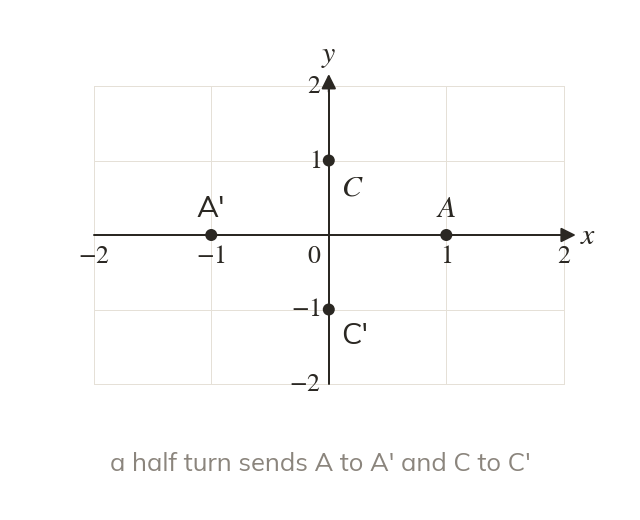

What the columns record
The columns of a transformation matrix record the images of and Every other point follows from those two.
The columns of a transformation matrix record where the points and are sent, so the matrix carries the whole transformation. Every other point follows from those two.